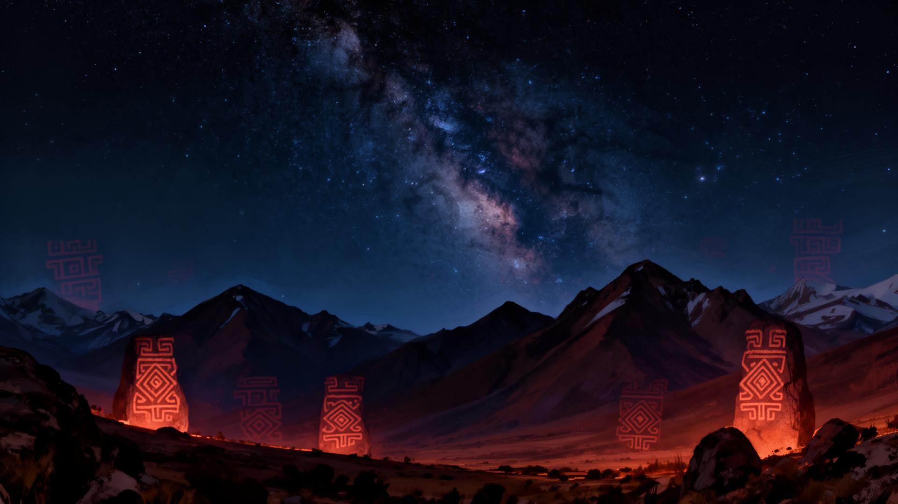
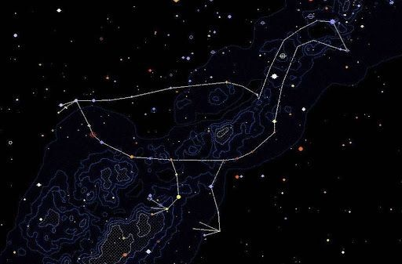
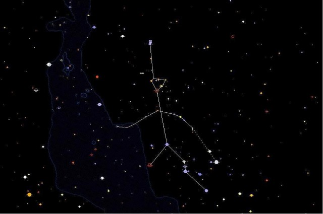
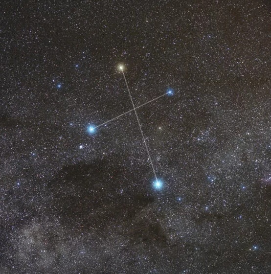

Cosmovisões originárias · América Latina
O céu antes dos
mapas estelares
Antes dos telescópios, povos originários da América Latina já liam o firmamento. Suas constelações, mitos e calendários ainda guiam o tempo, a terra e o espírito.
Mapa do céu
Estrelas que contam histórias
Um pequeno mapa interativo do céu austral. Passe o cursor sobre os grupos para revelar as constelações indígenas.
Constelações em destaque
Três figuras celestes lidas pelos povos originários.

Ema Celeste
A grande ema do céu aparece na segunda quinzena de junho, anunciando o inverno para os povos do sul e o início da estação seca para os do norte..

Homem Velho
Ancestral que caminha pelo céu marcando o verão.

Chakana
A ponte entre os três mundos: céu, terra e subterrâneo.
"Toda estrela é uma memória acesa."
Explore a mitologia, os povos e os calendários celestes que ainda hoje orientam comunidades inteiras na América Latina.